library(qcr)
#> Loading required package: qcc
#> Warning: package 'qcc' was built under R version 4.0.5
#> Package 'qcc' version 2.7
#> Type 'citation("qcc")' for citing this R package in publications.
#> Loading required package: fda.usc
#> Warning: package 'fda.usc' was built under R version 4.0.5
#> Loading required package: fda
#> Warning: package 'fda' was built under R version 4.0.5
#> Loading required package: splines
#> Loading required package: Matrix
#> Loading required package: fds
#> Warning: package 'fds' was built under R version 4.0.5
#> Loading required package: rainbow
#> Warning: package 'rainbow' was built under R version 4.0.5
#> Loading required package: MASS
#> Loading required package: pcaPP
#> Warning: package 'pcaPP' was built under R version 4.0.5
#> Loading required package: RCurl
#>
#> Attaching package: 'fda'
#> The following object is masked from 'package:graphics':
#>
#> matplot
#> Loading required package: mgcv
#> Loading required package: nlme
#> This is mgcv 1.8-31. For overview type 'help("mgcv-package")'.
#> ----------------------------------------------------------------------------------
#> Functional Data Analysis and Utilities for Statistical Computing
#> fda.usc version 2.0.2 (built on 2020-02-17) is now loaded
#> fda.usc is running sequentially usign foreach package
#> Please, execute ops.fda.usc() once to run in local parallel mode
#> Deprecated functions: min.basis, min.np, anova.hetero, anova.onefactor, anova.RPm
#> New functions: optim.basis, optim.np, fanova.hetero, fanova.onefactor, fanova.RPm
#> ----------------------------------------------------------------------------------
#> Loading required package: mvtnorm
#> Warning: package 'mvtnorm' was built under R version 4.0.5
#>
#> Package qcr: Quality Control Review
#> version 1.3 (built on 2021-05-14).
#> Copyright Miguel A. Flores Sanchez 2016-2021.Exploramos los datos de la base pistonrings
Los datos están en el data frame pistonrings que consta de 200 observaciones medidas en 25 muestras cada una de tamaño 5.
data(pistonrings)
attach(pistonrings)
summary(pistonrings)
#> diameter sample trial
#> Min. :73.97 Min. : 1.00 Mode :logical
#> 1st Qu.:74.00 1st Qu.:10.75 FALSE:75
#> Median :74.00 Median :20.50 TRUE :125
#> Mean :74.00 Mean :20.50
#> 3rd Qu.:74.01 3rd Qu.:30.25
#> Max. :74.04 Max. :40.00
boxplot(diameter ~ sample)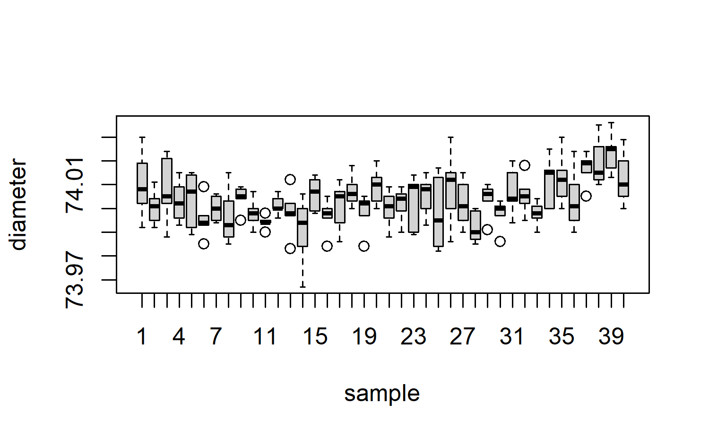
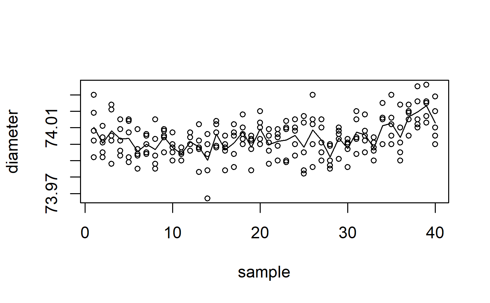
detach(pistonrings)Gráficos de control de la calidad univariantes
Gráficos para la media y el rango
Calcular la media y el rango de cada muestra, \(\bar{x}_i\) y \(R_i\), respectivamente \(i=1,\dots,k\).
Calcular la media y el rango global. Puesto que \(R_i/d_2\) es un estimador insesgado de \(\sigma\), y definiendo \[ \bar{R}=\frac{\sum_iR_i}{k} \] se utilizará \[ \frac{\bar{R}}{d_2}=\frac{\sum_iR_i}{d_2k} \] como estimador centrado de la desviación típica teórica.
Contrastar si cada valor \(\bar{x}_i\) debe estar en el intervalo \[ \left[\bar{\bar{x}}-\frac{3\bar{R}}{\sqrt{n}d_2},\bar{\bar{x}}+\frac{3\bar{R}}{\sqrt{n}d_2}\right] \] con probabilidad aproximada del 97.73% (utilizando intervalos de amplitud \(3\sigma\))
-
Podremos encontrar los valores de los límites de control \(3\sigma\) para la media como:
\(LCL = \bar{\bar{x}}-\frac{3}{\sqrt{n}d_2}\bar{R}=\bar{\bar{x}}-A_2\bar{R}\)
\(CL = \bar{\bar{x}}\)
\(UCL = \bar{\bar{x}}+\frac{3}{\sqrt{n}d_2}\bar{R}=\bar{\bar{x}}+A_2\bar{R}\)
x <- droplevels(pistonrings[1:125,])
res.qcs <- qcs.xbar(x, data.name="pistonrings", std.dev = "UWAVE-R")
plot(res.qcs, title = expression(paste("Gráfico de control para pistonrings:", bar(x)," ")))Gráficos R
- Dado \(n\), encontrar los valores \(D_3\) y \(D_4\) y calcular \(\bar{R}\). Con todo ello obtener los límites inferior \(D_3\bar{R}\) y superior \(D_4\bar{R}\) de control.
- Construir un gráfico que presente en abscisas y en ordenadas los valores \(R_i\). Trazar también la línea central (\(\bar{R}\)) y los límites de control (\(D_3\bar{R}\) y \(D_4\bar{R}\)).
- Si alguna de los rangos se sale de los límites de control, se admite que el proceso no está bajo control en ese instante.
x <- droplevels(pistonrings[1:125,])
res.qcs <- qcs.R(x, data.name="pistonrings",std.dev = "UWAVE-R")
plot(res.qcs, title = "Gráfico de control para pistonrings: R")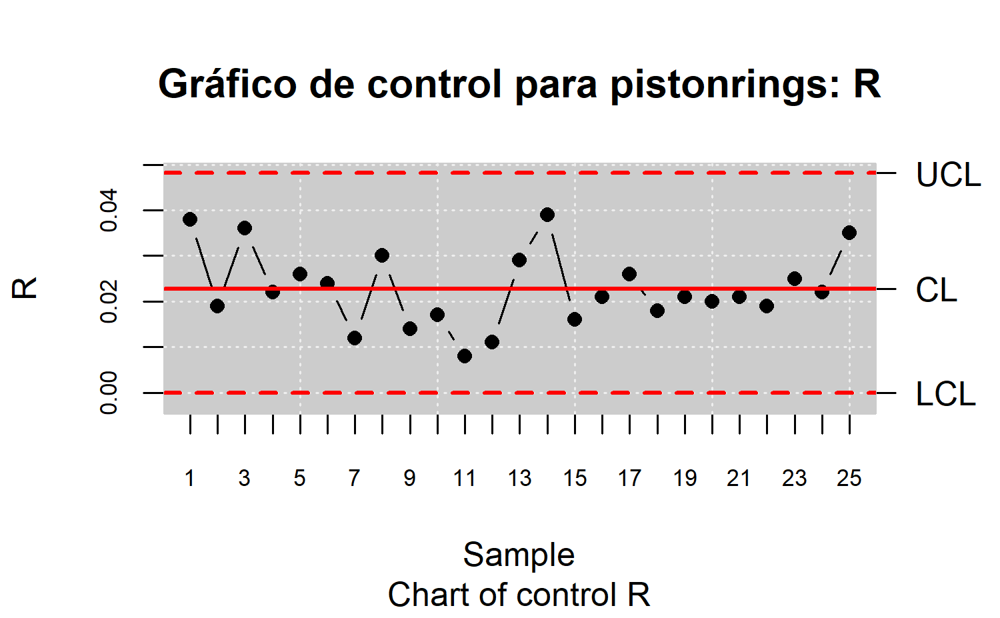
Gráficos para la media y la desviación estándar
Calcular la media y la desviación típica de cada muestra, \(\bar{x}_i\) y \(s_i\), respectivamente \(i=1,\dots,k\).
Calcular la media y la desviación típica global. La media global \(\bar{\bar{x}}\) resulta ser un estimador insesgado de la media teórica. Como la desviación típica muestral es un estimador sesgado de la desviación típica teórica, se utilizará \(s_i/c_2\), siendo \(c_2\) una constante dependiente de \(n\) y por ello se utilizará \[ \hat{\sigma}=\frac{\bar{s}}{c_2}=\frac{\sum_is_i}{c_2k} \] como estimador centrado de la desviación típica teórica.}
Contrastar si cada valor \(\bar{x}_i\) está en el intervalo \[ \left[\bar{\bar{x}}-\frac{3\bar{s}}{\sqrt{n}c_2},\bar{\bar{x}}+\frac{3\bar{s}}{\sqrt{n}c_2}\right] \] con probabilidad aproximada del 97.74%.
-
Podremos encontrar los valores de los límites de control \(3\sigma\) para la media como:
\(LCL = \bar{\bar{x}}-\frac{3}{\sqrt{n}c_2}\bar{s}=\bar{\bar{x}}-A_1\bar{s}\)
\(CL = \bar{\bar{x}}\)
\(UCL = \bar{\bar{x}}+\frac{3}{\sqrt{n}c_2}\bar{s}=\bar{\bar{x}}+A_1\bar{s}\)
x <- droplevels(pistonrings[1:125,])
res.qcs <- qcs.xbar(x, data.name = "pistonrings", std.dev = "UWAVE-SD")
plot(res.qcs, title = expression(paste("Gráfico de control para pistonrings:", bar(x)," ")))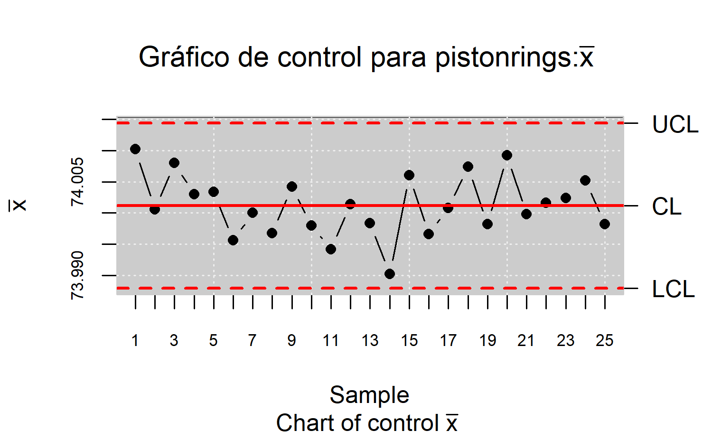
Gráfico s
- Dado \(n\), encontrar los valores \(B_3\) y \(B_4\) y calcular \(\bar{s}\). Con todo ello obtener los límites inferior \(B_3\bar{s}\) y superior \(B_4\bar{s}\) de control.
- Construir un gráfico que presente en abscisas y en ordenadas los valores \(s_i\). Trazar también la línea central (\(\bar{s}\)) y los límites de control (\(B_3\bar{s}\) y \(B_4\bar{s}\)).
- Si alguna de las desviaciones típicas se sale de los límites de control, se admite que el proceso no está bajo control en ese instante.
x <- droplevels(pistonrings[1:125,])
res.qcs <- qcs.S(x, data.name = "pistonrings", std.dev = "UWAVE-SD")
plot(res.qcs, title = "Gráfico de control para pistonrings: S")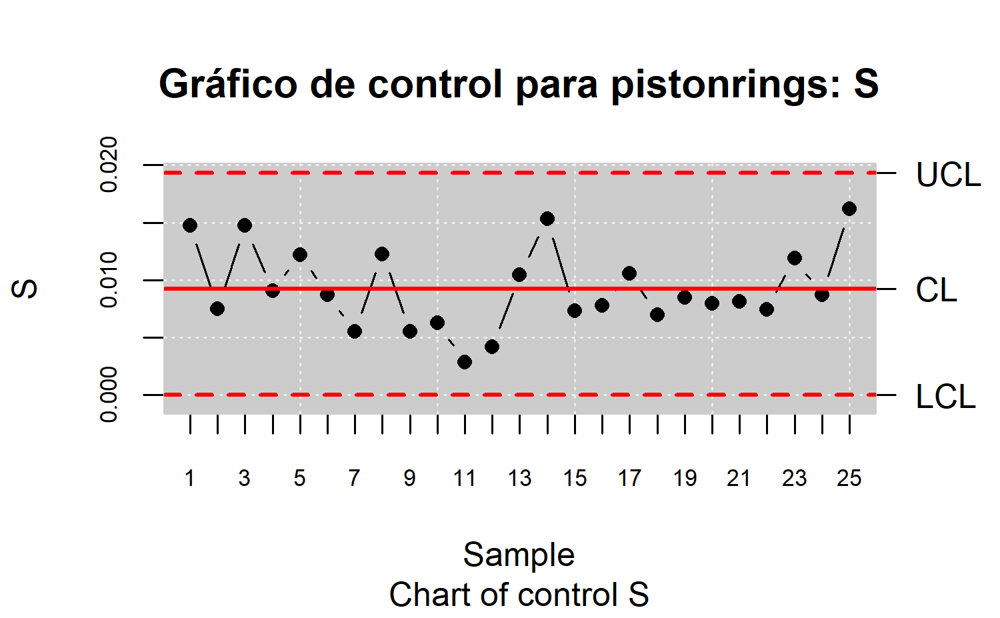
Gráficos \(p\)
Supóngase un artículo no está conforme con probabilidad \(p\), y que los artículos producidos sucesivamente son independientes; si seleccionamos \(k\) muestras aleatorias de \(n\) artículos, y representando por \(X_i\) al número de artículos defectuosos, tendremos que \(X_i\sim B(n,p)\).
Sabemos que \(\mu=np\) y \(\sigma=\sqrt{np(1-p)}\).
-
Para cada muestra, definimos la variable aleatoria fracción disconforme muestral como \(\hat{p}_i=\frac{X_i}{n}\). Observar que \(\hat{p}_i\) seguirá una distribución binomial con varianza:
\(E(\hat{p}_i)=\frac{E(X_i)}{n}=p\)
\(Var(\hat{p}_i)=\frac{Var(X_i)}{n^2}=\frac{p(1-p)}{n}\).
Por tanto, \(\lim_{n\rightarrow \infty}\hat{p}_i=N\left( p,\sqrt{\frac{p(1-p)}{n}} \right)\).
-
Si \(p\) es desconocida, la podemos estimar:
\(\bar{p}=\frac{1}{k}\sum_{i=1}^{k}\hat{p}_i\).
-
Según el modelo de Shewart tendremos que:
\(LCL = \bar{p}-3\sqrt{\frac{\bar{p}(1-\bar{p})}{n}}\)
\(CL = \bar{p}\)
\(UCL = \bar{p}+3\sqrt{\frac{\bar{p}(1-\bar{p})}{n}}\)
-
En caso de que el tamaño muestral (\(n_i\)) diferentes, el estimador para \(p\) ser??a:
\(\bar{p}=\frac{\sum_{i=1}^{k}n_i\hat{p}_i}{\sum_{i=1}^{k}n_i}.\)
Datos
Jugo de naranja (orangejuice): Es un data frame con 54 Observaciones y 4 variables. Donde se mide el jugo de naranja concentrado congelado que se envasa en latas de cartón de 6 oz. Estas latas se forman en una máquina de hilatura. Una lata es inspeccionado para determinar si, cuando se llena, el líquido puede derramarse ya sea en la costura lateral o alrededor de la articulación de la parte inferior. Si esto ocurre, una lata se considera no conforme.
Se tomaron 30 muestras de 50 latas cada una en intervalos de media hora durante un período de tres turnos (la máquina estaba en funcionamiento continuo). A partir de la muestra 15 se utiliza un nuevo bacth de stock.
Las variables del data frame son:
- sample (muestra): identificación de la muestra
- D: número de unidades defectuosas
- size (tamaño): tamaño de la muestra
- trial (ensayo): muestras de prueba (verdadero / falso)
data(orangejuice)
str(orangejuice)
#> 'data.frame': 54 obs. of 4 variables:
#> $ D : int 12 15 8 10 4 7 16 9 14 10 ...
#> $ sample: int 1 2 3 4 5 6 7 8 9 10 ...
#> $ size : int 50 50 50 50 50 50 50 50 50 50 ...
#> $ trial : logi TRUE TRUE TRUE TRUE TRUE TRUE ...
datos.qcd <- qcd(data = orangejuice, var.index = 1, sample.index = 2,
sizes = orangejuice$size, type.data = "atributte")
res.qcs <- qcs.p(datos.qcd)
summary(res.qcs)
#> p chart for orangejuice
#>
#> Summary of group statistics:
#> p
#> Min. :0.0400
#> 1st Qu.:0.1000
#> Median :0.1400
#> Mean :0.1778
#> 3rd Qu.:0.2400
#> Max. :0.4800
#>
#> Group sample size: 50
#> Number of groups: 54
#> Center of group statistics: 0.1777778
#> Standard deviation: 0.3823256
#>
#> Control limits:
#> LCL UCL
#> 0.01557078 0.3399848
#> 0.01557078 0.3399848
#> 0.01557078 0.3399848
#> 0.01557078 0.3399848
#> 0.01557078 0.3399848
#> 0.01557078 0.3399848
#> 0.01557078 0.3399848
#> 0.01557078 0.3399848
#> 0.01557078 0.3399848
#> 0.01557078 0.3399848
#> 0.01557078 0.3399848
#> 0.01557078 0.3399848
#> 0.01557078 0.3399848
#> 0.01557078 0.3399848
#> 0.01557078 0.3399848
#> 0.01557078 0.3399848
#> 0.01557078 0.3399848
#> 0.01557078 0.3399848
#> 0.01557078 0.3399848
#> 0.01557078 0.3399848
#> 0.01557078 0.3399848
#> 0.01557078 0.3399848
#> 0.01557078 0.3399848
#> 0.01557078 0.3399848
#> 0.01557078 0.3399848
#> 0.01557078 0.3399848
#> 0.01557078 0.3399848
#> 0.01557078 0.3399848
#> 0.01557078 0.3399848
#> 0.01557078 0.3399848
#> 0.01557078 0.3399848
#> 0.01557078 0.3399848
#> 0.01557078 0.3399848
#> 0.01557078 0.3399848
#> 0.01557078 0.3399848
#> 0.01557078 0.3399848
#> 0.01557078 0.3399848
#> 0.01557078 0.3399848
#> 0.01557078 0.3399848
#> 0.01557078 0.3399848
#> 0.01557078 0.3399848
#> 0.01557078 0.3399848
#> 0.01557078 0.3399848
#> 0.01557078 0.3399848
#> 0.01557078 0.3399848
#> 0.01557078 0.3399848
#> 0.01557078 0.3399848
#> 0.01557078 0.3399848
#> 0.01557078 0.3399848
#> 0.01557078 0.3399848
#> 0.01557078 0.3399848
#> 0.01557078 0.3399848
#> 0.01557078 0.3399848
#> 0.01557078 0.3399848
#>
#> Beyond limits of control:
#> [1] 0.34 0.44 0.40 0.36 0.48
#>
#> Violationg runs:
#> [1] 0.18 0.24 0.12 0.04 0.08 0.06 0.12 0.10 0.08 0.16 0.10 0.12 0.14 0.10 0.12
#> [16] 0.06 0.10
plot(res.qcs)
datos.qcs <- qcs.p(orangejuice[orangejuice$trial,c(1,2)], sizes = orangejuice[orangejuice$trial,3])
plot(datos.qcs)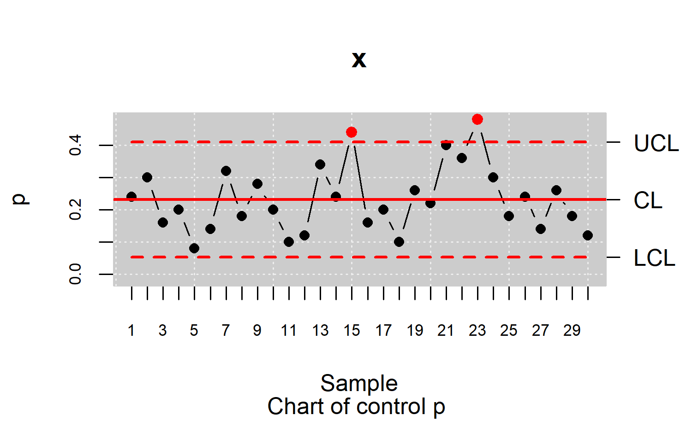
Gráfico np
En algunas ocasiones interesa analizar el número medio de disconformidades en lugar de su proporción; en este caso se utilizarón los llamados gráficos NP.
-
Para la construcción de este tipo de gráficos se estimarán las proporciones de la misma forma que en los gráficos P pero se construirán los gráficos basados en la media del proceso del siguiente modo:
\(LCL = n\bar{p}-3\sqrt{\frac{n\bar{p}(1-\bar{p})}{n}}\)
\(CL = n\bar{p}\)
\(UCL = n\bar{p}+3\sqrt{\frac{n\bar{p}(1-\bar{p})}{n}}\)
data(orangejuice)
str(orangejuice)
#> 'data.frame': 54 obs. of 4 variables:
#> $ D : int 12 15 8 10 4 7 16 9 14 10 ...
#> $ sample: int 1 2 3 4 5 6 7 8 9 10 ...
#> $ size : int 50 50 50 50 50 50 50 50 50 50 ...
#> $ trial : logi TRUE TRUE TRUE TRUE TRUE TRUE ...
datos.qcd <- qcd(data = orangejuice, var.index = 1, sample.index = 2,
sizes = orangejuice$size, type.data = "atributte")
res.qcs <- qcs.np(datos.qcd)
summary(res.qcs)
#> np chart for orangejuice
#>
#> Summary of group statistics:
#> np
#> Min. : 2.000
#> 1st Qu.: 5.000
#> Median : 7.000
#> Mean : 8.889
#> 3rd Qu.:12.000
#> Max. :24.000
#>
#> Group sample size: 50
#> Number of groups: 54
#> Center of group statistics: 8.888889
#> Standard deviation: 2.70345
#>
#> Control limits:
#> LCL UCL
#> 0.7785388 16.99924
#>
#> Beyond limits of control:
#> [1] 17 22 20 18 24
#>
#> Violationg runs:
#> [1] 9 12 6 2 4 3 6 5 4 8 5 6 7 5 6 3 5
plot(res.qcs)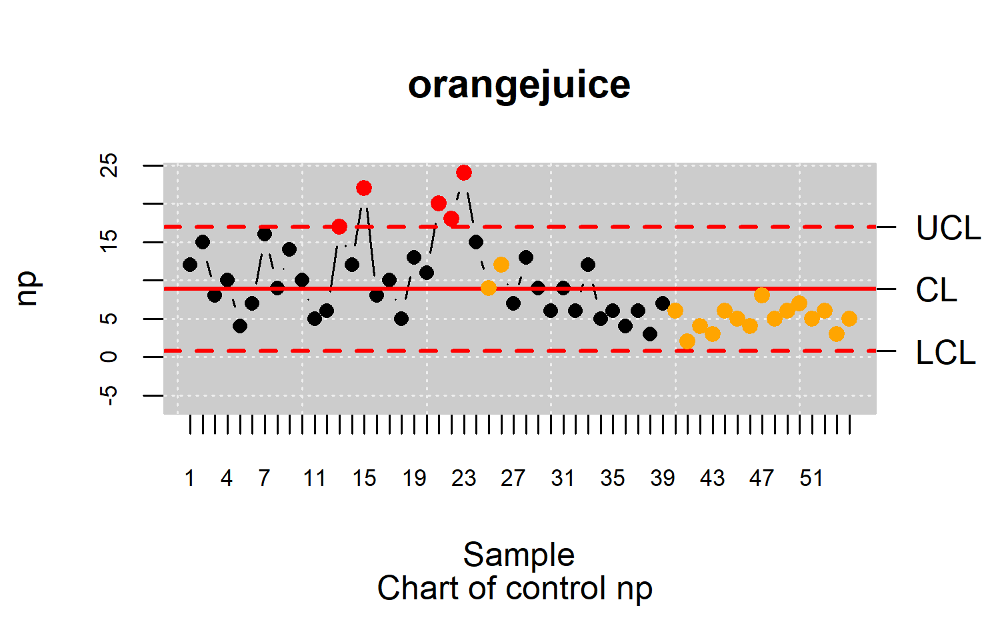
datos.qcs <- qcs.np(orangejuice[orangejuice$trial,c(1,2)], sizes = orangejuice[orangejuice$trial,3])
plot(datos.qcs)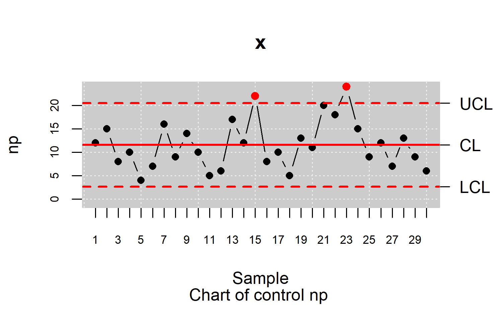
Gráfico c
Para construir el diagrama de control C empezamos por tomar \(k\) muestras \(X1,X_2,\dots,X_k\) , de \(n_i\) unidades cada una, por ejemplo \(X_i=(X_{i1},\dots,X_{in_i})\). Sea \(u\) el número esperado de unidades defectuosas en cada una de las muestras.
Para cada muestra se calcula el número \(u_{ij}\) de defectos de la unidad \(X_{ij}\), \(j=1,\dots,n_i\).
Si denotamos por \(c_i\) al número de defectos totales en la muestra \(i\)-ésima, es claro que + Por otro lado, si denotamos por \(u_i\) al valor esperado de defectos en la muestra \(i\)-ésima, tendremos que \(u_i=\frac{1}{n_i}\sum_{j=1}^{n_i}u_{ij}\). Observar pues que \(u_i=\frac{1}{n_i}c_i\), es decir, \(c_i=u_in_i\).
Notar además que \(\mathbb{E}(c_i)=\mathbb{E}(u_in_i)=n_i\mathbb{E}(u_i)=n_iu\).}
Es frecuente suponer que el número de defectos (sucesos no habituales) en una poblacion grande sigue una distribucion de Poisson: \(c_i\sim Poiss(n_iu)\).
Se cumplirá que \(\lim_{n\rightarrow{\infty}}c_i=N(n_iu,\sqrt{n_iu})\).
Si \(u=\mathbb{E}[u_i]\) es desconocida, la podemos estimar: \[ \hat{u}=\frac{1}{k}\sum_{i=1}^{k}u_i. \]
-
Según el modelo de Shewart tendremos que:
\(LCL = n_i\hat{u}-3\sqrt{{\hat{u}}{n_i}}\)
\(CL = n_i\hat{u}\)
\(UCL = n_i\hat{u}+3\sqrt{{\hat{u}}{n_i}}\)
Como el tamaño muestral (\(n_i\)) es diferente para cada subgrupo, para calcular los límites podemos optar por distintos métodos.
Datos
Placas impresas (Circuit boards data): Número de no conformidades observadas en 26 muestras sucesivas de 100 placas de circuitos impresos. Muestra 6 y 20 están fuera de los límites de control. Muestra 6 fue examinado por un nuevo inspector que no había reconocido varios tipos de no conformidades.
Además, el número inusualmente grande de las no conformidades en la muestra 20 se debío a un problema de control de la temperatura en la máquina de soldadura, que fue reparado subsequentemente. Los últimos 20 muestras son otras muestras recogidas en las unidades de inspección (cada una formada por 100 paneles). Las variables del data frame son:
- x : número de unidades defectuosas en 100 placas de circuito impreso (unidad de control)
- size (tamaño): tamaño de la muestra
- trial (ensayo) indicador muestra ensayo (verdadero / falso)
data(circuit)
str(circuit)
#> 'data.frame': 46 obs. of 4 variables:
#> $ x : int 21 24 16 12 15 5 28 20 31 25 ...
#> $ sample: int 1 2 3 4 5 6 7 8 9 10 ...
#> $ size : int 100 100 100 100 100 100 100 100 100 100 ...
#> $ trial : logi TRUE TRUE TRUE TRUE TRUE TRUE ...
datos <- circuit
datos$sample <- 1:length(datos$x)
str(datos)
#> 'data.frame': 46 obs. of 4 variables:
#> $ x : int 21 24 16 12 15 5 28 20 31 25 ...
#> $ sample: int 1 2 3 4 5 6 7 8 9 10 ...
#> $ size : int 100 100 100 100 100 100 100 100 100 100 ...
#> $ trial : logi TRUE TRUE TRUE TRUE TRUE TRUE ...
datos.qcd <- qcd(data = datos, var.index = 1,sample.index = 2,
sizes = 100, type.data = "atributte")
res.qcs <- qcs.c(datos.qcd)
summary(res.qcs)
#> c chart for datos
#>
#> Summary of group statistics:
#> c
#> Min. : 5.00
#> 1st Qu.:16.00
#> Median :19.00
#> Mean :19.17
#> 3rd Qu.:22.00
#> Max. :39.00
#>
#> Group sample size: 100
#> Number of groups: 46
#> Center of group statistics: 19.17391
#> Standard deviation: 4.378803
#>
#> Control limits:
#> LCL UCL
#> 6.037505 32.31032
#>
#> Beyond limits of control:
#> [1] 39 5
#>
#> Violationg runs:
#> [1] 12 15
plot(res.qcs)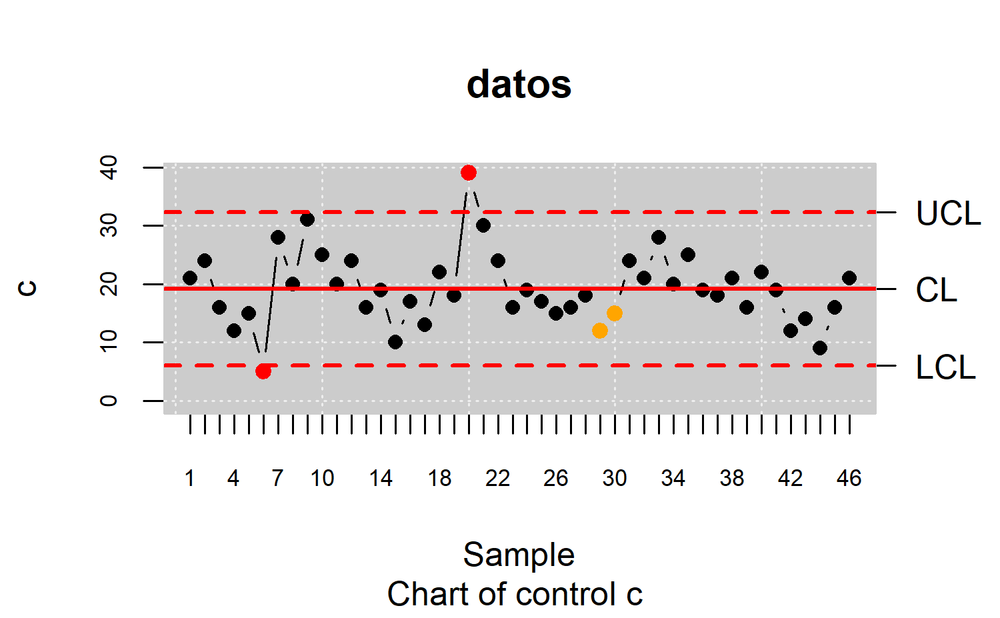
Gráfico Cusum
Los gráficos CUSUM se basan en la decisión de comprobar si el proceso está bajo control o no analizando toda o la mayor parte de la muestra. Para este fin se usará el estadístico \(s_r\): \[ s_r=\sum_{i=1}^{r}(\bar{x}_i-\mu_0). \]
Bajo supuestos de normalidad es evidente deducir la distribución del estadístico \(s_r\): \[ s_r\in N\left( r(\mu-\mu_0), \frac{r\sigma_0^2}{n} \right). \]
data(pistonrings)
res.qcd <- qcd(pistonrings, type.data = "dependence")
res.qcs <- qcs.cusum(res.qcd, type = "cusum")
summary(res.qcs)
#> cusum chart for pistonrings
#>
#> Summary of group statistics:
#> cusum
#> Min. :73.99
#> 1st Qu.:74.00
#> Median :74.00
#> Mean :74.00
#> 3rd Qu.:74.01
#> Max. :74.02
#>
#> Group sample size: 5
#> Number of groups: 40
#> Center of group statistics: 74.0036
#> Standard deviation: 0.01007094
#>
#> Control limits:
#> [1] -5 5
#>
#> Beyond limits of control:
#> [1] 73.9902 74.0060 73.9966 74.0008 74.0074 73.9982 74.0092 73.9998 74.0016
#> [10] 74.0024 73.9982 73.9922 73.9974
#>
#> Violationg runs:
#> [1] 74.0196 74.0234 74.0128
plot(res.qcs)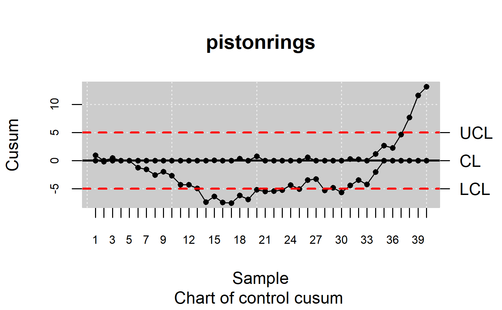
Gráfico Ewma
En los gráficos EWMA se representan promedios de la observación contemporánea y las observaciones anteriores, donde se da más peso a las observaciones más recientes (medias móviles \(y_i\)).
Se define como: \[ y_i=\lambda x_i+(1-\lambda)y_{i-1} \]
-
Los límites de control y la línea central son entonces: \(LCL = \mu_0-3\sigma\sqrt{\frac{\lambda(1-(1-\lambda)^{2i})}{2-\lambda}}\)
\(LCS = \mu_0\)
\(UCL = \mu_0+3\sigma\sqrt{\frac{\lambda(1-(1-\lambda)^{2i})}{2-\lambda}}\)
-
Si \(i\) es muy elevado se tiene que, aproximadamente,
\(LCL = \mu_0-3\sigma\sqrt{\frac{\lambda}{2-\lambda}}\)
\(LCS = \mu_0\)
\(UCL = \mu_0+3\sigma\sqrt{\frac{\lambda}{2-\lambda}}\)
Ejemplos Gráfico para la media
En la siguiente sección se presentan gráficos de control para monitorizar la tendencia central de la variable de calidad: diamétro de los aros de los pistones.
Estabilizando el proceso
Se realiza un gráfico de medias para monitorizar el diámetro de los piston rings:
str(pistonrings)
#> 'data.frame': 200 obs. of 3 variables:
#> $ diameter: num 74 74 74 74 74 ...
#> $ sample : int 1 1 1 1 1 2 2 2 2 2 ...
#> $ trial : logi TRUE TRUE TRUE TRUE TRUE TRUE ...
pistonrings.qcd<-qcd(pistonrings)
class(pistonrings.qcd)
#> [1] "qcd" "data.frame"
res.qcs <- qcs.xbar(pistonrings.qcd)
plot(res.qcs,title="Control Chart Xbar for pistonrings I", std.dev = "UWAVE-R")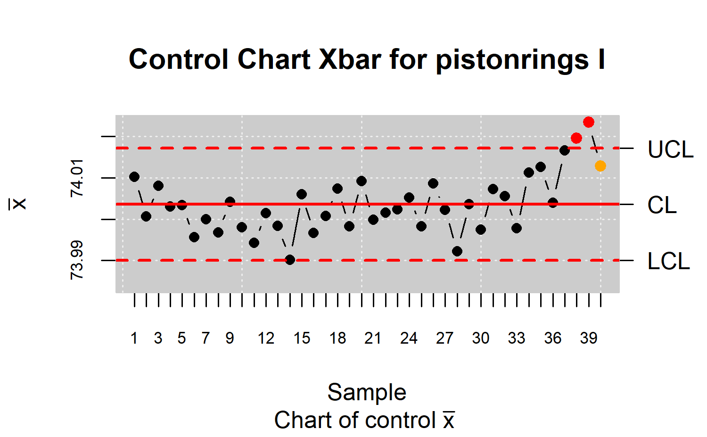
summary(res.qcs)
#> xbar chart for pistonrings
#>
#> Summary of group statistics:
#> xbar
#> Min. :73.99
#> 1st Qu.:74.00
#> Median :74.00
#> Mean :74.00
#> 3rd Qu.:74.01
#> Max. :74.02
#>
#> Group sample size: 5
#> Number of groups: 40
#> Center of group statistics: 74.0036
#> Standard deviation: 0.01007094
#>
#> Control limits:
#> LCL UCL
#> 73.99009 74.01712
#>
#> Beyond limits of control:
#> [1] 74.0196 74.0234
#>
#> Violationg runs:
#> [1] 74.0128Se crea el objeto qcd (Quality Control Data) y el objeto qcs (Quality Control Statistics) del tipo xbar.
Con el comando summary se obtienen las estimaciones de la media y la varianza así como los límites de control y con el comando plot se realiza el correspondiente gráfico de control.
Además para indicar que el tipo de estimación de la varianza es por medio de Rangos, en la opción std.dev = “UWAVE-R” (método de estimación por defecto).
Se puede observar tres puntos que indican que el proceso está fuera de control. Dos de estos salen fuera de los límites de control y un punto que está dentro de los límites pero corresponde a una racha.
Por tanto, el proceso no esta bajo control. Se utiliza la función state.control que permite eliminar los puntos fuera de control y adempás devuelve un objeto del tipo qcd que se utiliza para construir un nuevo gráfico de control.
res.qcd <- state.control(res.qcs)
res.qcs <- qcs.xbar(res.qcd)
plot(res.qcs,title="Control Chart Xbar for pistonrings II")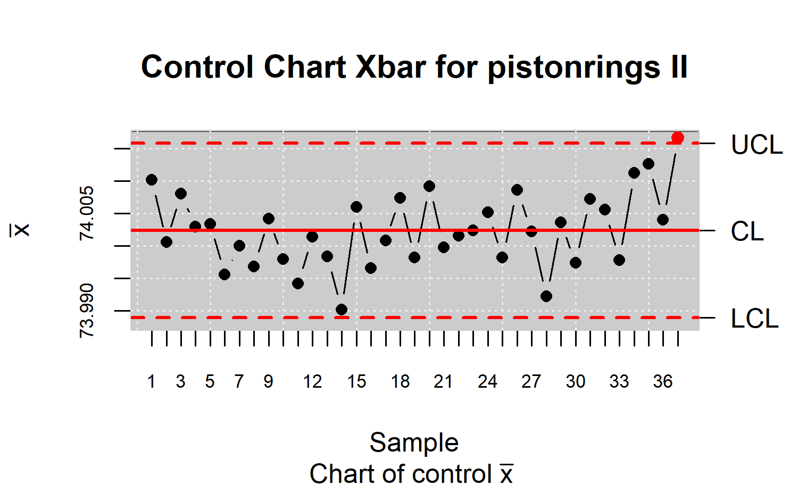
summary(res.qcs)
#> xbar chart for pistonrings
#>
#> Summary of group statistics:
#> xbar
#> Min. :73.99
#> 1st Qu.:74.00
#> Median :74.00
#> Mean :74.00
#> 3rd Qu.:74.01
#> Max. :74.02
#>
#> Group sample size: 5
#> Number of groups: 37
#> Center of group statistics: 74.00239
#> Standard deviation: 0.009992796
#>
#> Control limits:
#> LCL UCL
#> 73.98898 74.0158
#>
#> Beyond limits of control:
#> [1] 74.0166
#>
#> Number violationg runs: 0Aún existe un punto fuera de los límites de control. Se utiliza la función state.control para la eliminación de puntos fuera de control y se estiman los límites de control hasta que el proceso este bajo control, es decir, no existan puntos fuera de los límites o rachas.
res.qcd <- state.control(res.qcs)
res.qcs <- qcs.xbar(res.qcd)
plot(res.qcs,title="Control Chart Xbar for pistonrings III")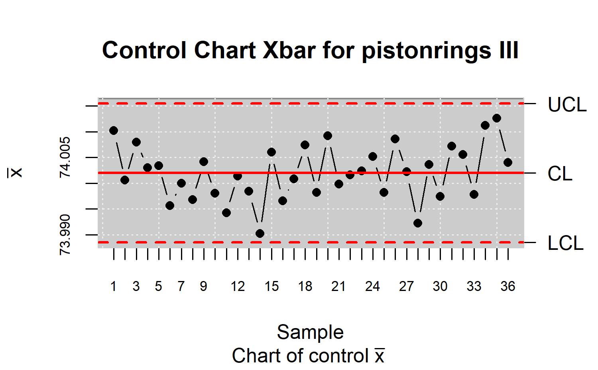
summary(res.qcs)
#> xbar chart for pistonrings
#>
#> Summary of group statistics:
#> xbar
#> Min. :73.99
#> 1st Qu.:74.00
#> Median :74.00
#> Mean :74.00
#> 3rd Qu.:74.01
#> Max. :74.01
#>
#> Group sample size: 5
#> Number of groups: 36
#> Center of group statistics: 74.00199
#> Standard deviation: 0.01004347
#>
#> Control limits:
#> LCL UCL
#> 73.98852 74.01547
#>
#> Number beyond limits: 0
#>
#> Number violationg runs: 0Monitoriando un proceso
En este ejemplo se parte de un proceso bajo control (Fase I) y una vez calculado los límites se realiza la monitorización del proceso (Fase II). Para la Fase I se considera las primeras 25 muestras de los datos de piston rings y para la Fase II se utilizan el resto de las muestras.
x <- droplevels(pistonrings[1:125,])
y <- droplevels(pistonrings[126:200,])
res.qcs <- qcs.xbar(x, data.name="Control Chart Xbar for pistonrings")
plot(res.qcs)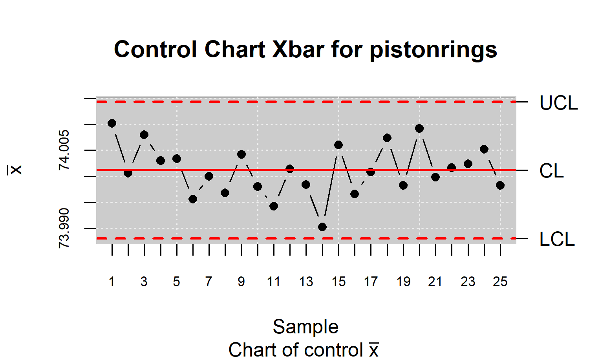
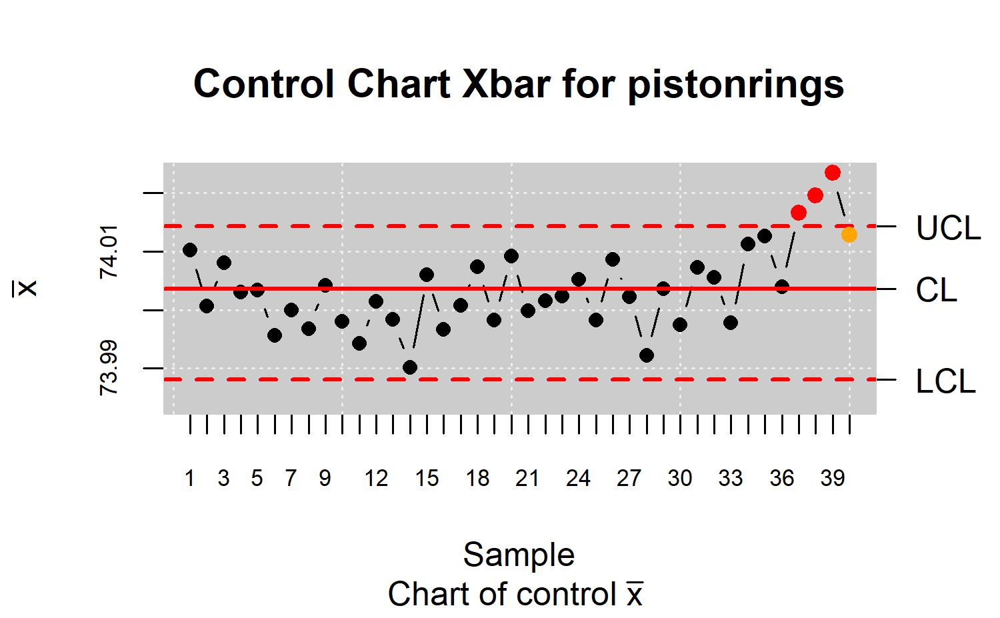
summary(res.qcs)
#> xbar chart for Control Chart Xbar for pistonrings
#>
#> Summary of group statistics:
#> xbar
#> Min. :73.99
#> 1st Qu.:74.00
#> Median :74.00
#> Mean :74.00
#> 3rd Qu.:74.01
#> Max. :74.02
#>
#> Group sample size: 5
#> Number of groups: 40
#> Center of group statistics: 74.0036
#> Standard deviation: 0.01007094
#>
#> Control limits:
#> LCL UCL
#> 73.98805 74.0143
#>
#> Beyond limits of control:
#> [1] 74.0166 74.0196 74.0234
#>
#> Violationg runs:
#> [1] 74.0128Límites de alerta
x <- droplevels(pistonrings[1:125,])
res.qcs <- qcs.xbar(x, data.name="Control Chart Xbar for pistonrings")
plot(res.qcs,conf.nsigma.alert=2)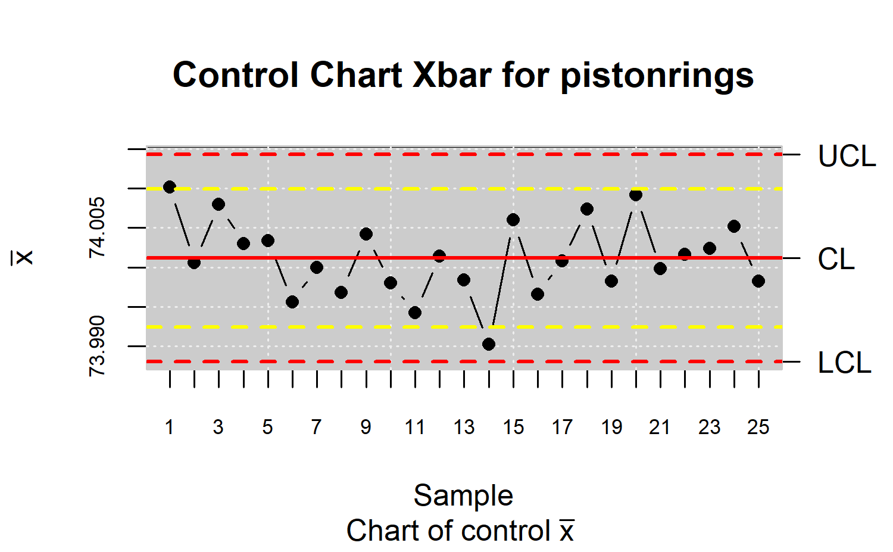